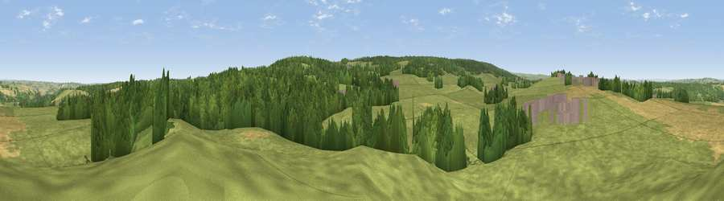

Viewpoint near Slaley
#23450 in England · top 57% of its area beats it · near SlaleyThe view, rendered

A 360° render of this exact spot computed from the terrain model, tree cover and land cover — summer colours, afternoon light, calibrated against photographs of famous viewpoints. Real trees, hedges and buildings will differ in detail.
The panorama
Grey silhouette: terrain skyline in each direction (720 bearings, Earth curvature and refraction included). Dashed green: skyline with trees (+15 m) and buildings (+8 m) as obstacles. Blue strip: how far the ground is visible on each bearing.
Where the view opens
Wedge length = distance to the farthest visible ground on that bearing (vegetation-aware). Rings at 10, 25 and 50 km.
What fills the view
65% grassland · 24% woodland · 9% cropland · 1% built-up
Angular shares of the visible panorama (visual magnitude), not map area. Landscape diversity 0.39 (0–1 Shannon).
Key numbers
More beautiful places nearby
The staircase of upgrades: each row has a higher view potential than everything closer. Driving times are estimates from straight-line distance, calibrated against real road routing — check an actual route before setting out.
| Place | Direction | Drive | Score |
|---|---|---|---|
| Viewpoint near Slaley | SSE · 3 km | ~7 min | 69.8 |
| Currock Hill | E · 11 km | ~21 min | 70.4 |
| Viewpoint near Hedley on the Hill | E · 11 km | ~22 min | 71.5 |
| Viewpoint near Greenside | ENE · 14 km | ~25 min | 74.2 |
| Pontop Pike | ESE · 17 km | ~29 min | 77.8 |
| Little Dun Fell | SW · 37 km | ~56 min | 78.4 |
| Cross Fell | SW · 38 km | ~57 min | 78.7 |
| Viewpoint near Thropton | N · 41 km | ~61 min | 81.8 |
54.91198, -2.02064 · source: screening · position refined by local search. Computed location — check access rights before visiting.